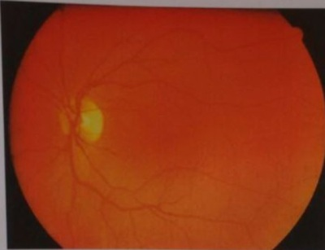
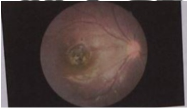
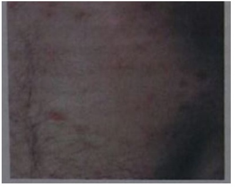
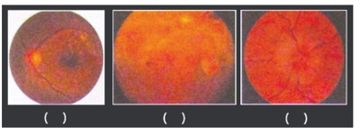
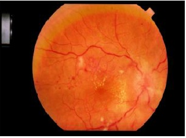

Questão 1 · Retinopatia Diabética · 4000109744Dentre as alternativas abaixo, quais são as alterações mais precoces encontrados na retinopatia diabética?
A Ingurgitamento venoso.
B Exsudatos duros.
C Micro-hemorragias.
D Microaneurismas.
Questão 2 · Retinopatia Diabética · 4000057313Sobre a retinopatia diabética podemos afirmar:
A Microaneurismas é achado precoce.
B Cruzamentos arteriovenosos são achados típicos.
C Queixa de baixa acuidade visual é comum.
D A fotocoagulação resolve a retinopatia.
E Retinopatia proliferativa ocorre já no diagnóstico do diabetes mellitus tipo 1.
Questão 3 · Catarata Senil · 4000034147Dentre as causas possíveis de visão turva, podemos citar, EXCETO:
A Diabetes mellitus
B Catarata, olhos secos, hipoglicemia, miopia e hipermetropia.
C Descolamento da retina, neurite ótica e presbiopia.
D Hipotireoidismo e cardiopatia.
Questão 4 · Retinopatia Diabética · 4000005231Mulher, 54 anos de idade, procura atendimento com queixa de baixa acuidade visual há 4 meses, pior em olho direito, de forma progressiva e indolor. Nega outros sintomas oculares. Apresenta DM tipo 2 insulinodependente há 14 anos, HAS controlada há 7 anos e IMC 30 kg/m². O que se espera encontrar no exame oftalmológico dessa paciente?
A Catarata nuclear.
B Edema macular.
C Descolamento de retina tracional.
D Neovascularização de disco óptico.
E Vasculite arteriolar periférica.
Questão 5 · Uveíte por Síf ilis · 4000005191Criança de 2 anos de idade, proveniente de abrigo, cujos dados de pré-natal e parto são desconhecidos, apresenta retardo de desenvolvimento neuropsicomotor. A acompanhante acha que a criança não enxerga. Ao exame, nota-se que ela não consegue xar e seguir objetos, inclusive os sonoros, e apresenta alterações ósseas e dentárias (dentes de Hutchinson). Qual o achado mais provável no fundo de olho?
A Alteração pigmentar do tipo “sal e pimenta".
B Cicatriz de coriorretinite em "farol de neblina”.
C Ingurgitamento vascular e hemorragias intrarretinianas.
D Estreitamento vascular e "fios de prata e cobre”.
E Hipoplasia óptica com sinal do "duplo anel”.
Questão 6 · Retinopatia da Prematuridade · Catarata Congênita · 4000099392Estima-se que 14 milhões de crianças no mundo sejam cegas. As principais causas evitáveis de perda visual na infância são:
A Catarata e hipoplasia de nervo óptico.
B Opacidade de córnea e cegueira cortical.
C Retinopatia da prematuridade e catarata.
D Hipoplasia de nervo óptico e retinite pigmentosa.
Questão 7 · Rubéola Congênita · 4000095225As manifestações oculares da síndrome da rubéola congênita são: I. catarata; II. retinopatia pigmentar; III. microftalmia; IV. descolamento da retina. Estão corretas as alternativas
A I, II, III e IV.
B I e IV, apenas.
C II e III, apenas.
D III e IV, apenas.
E I, II e III, apenas.
Questão 8 · Oclusão da Artéria Central da Retina e Seus Ramos · Hif ema Traumático · 4000067744São causas de perda visual repentina unilateral:
A Eclampsia, infarto vertebro-basilar, glaucoma.
B Trauma, entrópio, Arterite temporal.
C Hemorragia vítrea, amaurose fugaz, hordéolo.
D Oclusão da artéria central da retina, infarto do lobo occipital, hifema.
Questão 9 · Retinopatia Diabética · 4000048808Paciente sexo masculino foi submetido a screeening de retina, portador de diabetes tipo 2 e usuário de insulina 2x ao dia. Seu médico avisou que houve formação de novos vasos e ele pergunta ao médico qual a importância disso. Qual a melhor resposta?
A Áreas no olho que foram previamente danificadas e foram regeneradas.
B Seu controle do diabetes está bom e sua visão está melhorando.
C Sua doença está progredindo e de difícil controle.
D É um achado normal em paciente com diabetes tipo 2.
Questão 10 · Degenerações Retinianas · 4000002601Nas degenerações retinianas periféricas, é INCORRETO afirmar:
A Degeneração cistóide periférica ocorre em todos os olhos adultos.
B Degeneração em flocos de neve é importante porque é geralmente associada com outras degenerações vitreorretinianas importantes.
C 25% dos olhos normais tem degeneração pavimentosa.
D Drusas periféricas são semelhantes a algumas drusas no pólo posterior.
E Favo de mel, ou degeneração reticular, é associado com roturas retinianas. ida oib pr ed
Questão 11 · Síndrome de Behçet · Síndrome de Behçet · 4000002515A doença de Behçet, é CORRETO afirmar que:
A Homens e mulheres são igualmente afetados na população japonesa.
B Uma das características menores da doença é o eritema nodoso.
C O envolvimento unilocular é visto em 50% dos casos.
D Neovascularização pode estar associada com vasculite retiniana.
E Associado com uveítes tem um bom prognóstico visual.
Questão 12 · Retinopatia Diabética · 4000002277O diabetes mellitus provocar alteração ocular, sendo a mais prevalente o(a):
A Catarata.
B Glaucoma.
C Retinopatia.
D Conjuntivite crônica.
E Paralisia transitória da musculatura extrínseca do olho.
Questão 13 · Retinopatia Diabética · 4000002250Sobre a retinopatia diabética, analise. I. Uma das complicações mais comuns, presente tanto no diabetes tipo 1 quanto no tipo 2, especialmente em pacientes com longo tempo de doença e mau controle glicêmico. II. Os efeitos colaterais decorrentes da fotocoagulação consistem em escotomas centrais, di culdade para leitura, aceleração da catarata e, principalmente, na perda da visão periférica ou na diminuição do campo visual. III. A siopatologia das alterações microvasculares do tecido retiniano está relacionada à hiperglicemia crônica, que leva a alterações circulatórias, como perda do tônus vascular, alteração do fluxo sanguíneo, diminuição da permeabilidade vascular e, consequentemente, extravasamentos, edemas e obstrução vascular, a qual leva à neovascularização, com vasos frágeis que se rompem, causando hemorragia e descolamento da retina. IV. O exame oftalmológico completo, incluindo oftalmoscopia (direta e indireta) e a biomicroscopia da retina sob midríase medicamentosa, é fundamental para a detecção (86%) e estadiamento da retinopatia. Estão CORRETAS as afirmativas:
A I, II, III e IV.
B I e II, apenas.
C II e III, apenas.
D III e IV, apenas.
E I, II e IV, apenas.
Questão 14 · Retinopatia Diabética · 4000002211A hemorragia vítrea causa baixa de acuidade visual pela opaci cação hemática do vítreo. É importante investigar antecedentes oculares como traumas e cirurgias, bem como patologias sistêmicas. Assinale, a seguir, a causa mais frequente de hemorragia vítrea.
A Oclusão venosa.
B Descolamento de retina.
C Descolamento do vítreo posterior.
D Retinopatia diabética proliferativa.
E Uveíte.
Questão 15 · Retinopatia Diabética · 4000106021Mulher de 52 anos de idade, diabética há 5 anos controlada com metformina, gliclazida e dieta. Foi a uma consulta no oftalmologista e o fundo de olho está mostrado a seguir. É possível observar no fundo de olho:

A Papiledema e neovascularização.
B Papila com limites nítidos e mácula sem vasos.
C Hemorragia retiniana e exsudato algodonoso.
D Exsudato duro e cruzamento AV patológico.
Questão 16 · Retinopatia Hipertensiva · 4000091665Quais dos achados fundoscópicos abaixo não são próprios de retinopatia hipertensiva?
A Cruzamentos patológicos.
B Hemorragias.
C Exsudatos algodonosos.
D Placas aterosclerosas.
E Microaneurismas.
Questão 17 · Retinopatia Hipertensiva · 4000065357Quanto à retinopatia hipertensiva, é CORRETO afirmar que:
A Os achados da hipertensão arterial maligna são divididos em duas categorias: retinopatia hipertensiva e neuropatia óptica hipertensiva.
B Cruzamentos arteriovenosos são achados altamente específicos e podem ser considerados um marco na de natureza crônica.
C Seu diagnóstico se baseia em achados clínicos associados ao exame de angiografia fluoresceínica.
D A de natureza crônica resulta, com frequência, em perda visual significativa.
E Não guarda correspondência com perdas significativas de campos visuais.
Questão 18 · Retinopatia Diabética · Rastreio da retinopatia diabética · 4000001315Você estava de plantão em um grande hospital terciário, como clínico, e o residente médico da oftalmologia solicitou seu parecer clínico para um paciente diabético que foi internando de urgência por grave complicação oftalmológica. Sendo a retinopatia diabética (RD) umas das principais complicações relacionadas ao cegueira em pessoas com idade entre 20 e 74 anos, para ajudar no controle do paciente, você CORRETAMENTE orientou que:
A O tempo de duração do diabetes e o controle glicêmico não se relacionam com a gravidade da RD.
B É fundamental que seja feito o controle glicêmico adequado para a prevenção e diminuição das complicações relacionadas à doença.
C Os pacientes submetidos ao controle intensivo não apresentaram redução no risco de desenvolvimento de retinopatia.
D De maneira geral, a redução da hemoglobina glicada não leva a uma diminuição no risco de aparecimento da retinopatia, somente de sua progressão.
Questão 19 · Síndrome de VogtKoyanagiHarada · 4000114484A combinação de panuveíte bilateral granulomatosa, febre, cefaleia, rigidez de nuca, pleocitose liquórica, alopecia e poliose numa mulher de 44 anos sugere o seguinte diagnóstico:
A Sarcoidose.
B Síndrome de Mikulicz.
C Doença de Behçet.
D Doença de Vogt-Koyanagi-Harada.
E Doença de Gaucher.
Questão 20 · Of talmologia · 4000114176Assinale a alternativa CORRETA:
A O ceratocone é uma doença que apresenta irregularidade na curvatura da retina e, nos casos graves, tem indicação de transplante de córnea.
B Paciente com queixa de enxergar “flashes” no campo visual ou luzes intermitentes devem ser considerados para a hipótese de lesão/descolamento da retina.
C Proptose unilateral se refere à queda palpebral por lesão do terceiro nervo craniano ipsilateral.
D Firmado o diagnóstico oftalmológico de “mosca volante”, o paciente deve ser imediatamente encaminhado para tratamento cirúrgico.
Questão 21 · Retinite por Citomegalovírus · Retinoblastoma · Retinopatia da Prematuridade · 4000110633Mãe traz lho de 10 meses de vida para exame de rotina na Unidade de Saúde da Família. Diz que não realizou o pré-natal e que o parto normal ocorreu na 35a semana de gestação. A imagem abaixo (VER IMAGEM) foi obtida do fundo de olho direito da criança, e sugere:

A Citomegalovirose congênita.
B Toxoplasmose ocular.
C Retinopatia da prematuridade.
D Retinoblastoma.
Questão 22 · Doença Oclusiva Retiniana · 4000041183D. Rosa, 62 anos, hipertensa desde os 45 anos, com uso regular de anti-hipertensivos, apresentou subitamente um quadro de amaurose fugaz resultando em perda da visão monocular transitória. A causa mais frequente deste quadro é:
A Embolismo das arteríolas da retina.
B Diabetes mellitus
C Glaucoma.
D Catarata.
E Pterígio.
Questão 23 · Retinite por Citomegalovírus · 4000035854Recém-nascido apresenta no exame de fundo de olho in amação vítrea associada a extensas áreas de necrose de cor branco-amarelada e focos hemorrágicos na retina, junto aos vasos sanguíneos. Pensando-se no agente causador, qual opção terapêutica é a MAIS adequada?
A Penicilina G cristalina.
B Sulfa-pirimetamina.
C Voriconazol.
D Ganciclovir.
Questão 24 · Uveíte por Síf ilis · 4000108589Homem, 42 anos, que sabe ser infectado pelo HIV há 8 anos, procura a Unidade de Pronto Atendimento com queixa de perda visual súbita em olho esquerdo. Refere uso irregular dos antirretrovirais e contagem de linfócitos T CD4+ = 160 cel/mm³, feito há um mês. Exame físico geral: regular estado geral, alopecia em placas no couro cabeludo e lesões no tronco e abdome (Figura). Exame oftalmológico: acuidade visual de 1,0 em olho direito e 0,1 em olho esquerdo, discreta hiperemia conjuntival no olho esquerdo. Fundo de olho normal à direita, e de difícil visualização à esquerda por opacidade de meios. Figura do tronco e abdome anterior esquerdo: Qual a hipótese diagnóstica mais provável?

A Citomegalovirose ocular.
B Sífilis ocular.
C Toxoplasmose ocular.
D Toxocaríase ocular.
Questão 25 · Hipertensão gestacional · Lúpus Eritematoso Sistêmico LES · Endocardite · 4000099666Sobre as manifestações retinianas das doenças sistêmicas, assinale aquela que NÃO se correlaciona corretamente com a etiologia apresentada ao lado:
A Manchas de Roth: endocardite.
B Edema de papila: Doença Hipertensiva Específica da Gestação (DHEG).
C Vasculite retiniana: lúpus eritematoso sistêmico.
D Retinopatia em queijo com ketchup (exsudatos + hemorragias): toxoplasmose.
Questão 26 · Retinite por Citomegalovírus · 4000067850Um paciente vivendo com HIV/Aids há 15 anos, em Terapia Antirretroviral (TARV) atual com tenofovir, emtricitabina e fosamprenavir, comparece para avaliação oftalmológica em função de redução da acuidade visual. Sua última contagem de linfócitos T-CD4+ é de 40 céls/µl e sua última carga viral (PCR), 2,3 log. A fundoscopia revela a presença de coriorretinite caracterizada por extensas áreas de necrose retiniana com hemorragias de permeio acompanhando os vasos retinianos (aspecto clássico em "queijo e ketchup"). A hipótese etiológica provável de tal retinite é:
A Citomegalovírus.
B Herpesvírus tipo 1.
C Vírus varicela-zóster.
D Mycobacterium tuberculosis.
Questão 27 · Uveíte Posterior Coriorretinite · 4000122805No paciente imunocompetente, a origem, o início e o tipo de diagnóstico da uveíte mais comum em nosso meio são:
A congênita ou adquirida / uveíte anterior, granulomatosa, recorrente / laboratorial.
B congênita ou adquirida / uveíte posterior, granulomatosa, recorrente / clínico.
C congênita / uveíte intermediária, não granulomatosa, não recorrente / clínico.
D congênita / panuveíte, granulomatosa, não recorrente / laboratorial.
E adquirida / panuveíte, não granulomatosa, recorrente / clínico.
Questão 28 · Retinopatia Diabética · Granulomatose com poliangiíte GPA ou granulomatose de Wegener · 4000003833Mieloma múltiplo MM Estreitamento arterial, indentação nas interseções arteriovenosas, infartos da camada de bras nervosas e hemorragias intrarretianas caracterizam manifestações oftalmológica de qual doença sistêmica?
A Diabetes mellitus;
B Mieloma Múltiplo;
C Hipertensão arterial sistêmica;
D Granulomatose de Wegener;
Questão 29 · Retinopatia Diabética · Retinopatia Hipertensiva · Hipertensão Intracraniana · 4000092168Associe os diagnósticos (numerados de 1 a 5) às imagens típicas obtidas à fundoscopia (VER IMAGEM). 1 - Fundoscopia normal; 2 - Retinopatia diabética não proliferativa; 3 - Retinopatia diabética proliferativa; 4 - Retinopatia hipertensiva; 5 - Edema de papila. A sequência numérica correta, da esquerda para a direita, é:

A 2 - 3 - 5
B 2 - 4 - 1
C 3 - 4 - 2
D 4 - 2 - 1
E 4 - 3 - 5
Questão 30 · Retinopatia da Prematuridade · 4000085177Várias campanhas de prevenção à cegueira têm sido implementadas no Brasil. A retinopatia da prematuridade está entre uma das causas importantes de cegueira em nosso país. Nesta abordagem de prevenção, o teste do reflexo vermelho também tem sido empregado pelas pediatras. Responda esta questão baseado nos métodos de prevenção das doenças oculares do recém-nascido. Considere as seguintes afirmativas: I – O primeiro exame ocular deve ser feito em recém-nascido prematuro nos primeiros dias de vida. II – A incidência de retinopatia da prematuridade é maior quanto maior for a idade gestacional do recém-nascido. III – O reflexo vermelho alterado indica alteração de córnea ou retina. Quais estão corretas?
A I e II.
B II e III.
C Apenas II.
D Apenas III.
Questão 31 · Retinopatia Hipertensiva · 4000068033Um paciente com este exame de fundoscópico apresenta como principal dado clínico: (VER IMAGEM)

A Hemoglobina A1C maior que 8%.
B Síndrome da sela túrcica vazia.
C Ingestão aguda de metanol.
D Pressão arterial – 260 X 130 mmHg.
E Glomerulopatia de lesões mínimas.
Questão 32 · Retinopatia Hipertensiva · 4000002311Paciente com Hipertensão Arterial Sistêmica acelerada apresenta ao exame de fundo de olho:
A Exudatos e papiledema
B Hemorragia retiniana e papiledema
C Dano vascular sem papiledema
D Cruzamentos artério-venoso e papiledema
E Espasmo arteriolar e papiledema
Questão 33 · Retinopatia Diabética · 4000111897Com relação à retinopatia diabética, pode-se afirmar que:
A O tratamento deve ser postergado o máximo possível.
B Ela não tem correlação com o controle glicêmico.
C Os pacientes devem ser examinados rotineiramente a cada 5 anos.
D As hemorragias observadas no fundo de olho são em "chama de vela".
E Ela tem relação direta com o tempo de doença.
Questão 34 · Descolamento de Retina Regmatogênico · 4000007311Paciente deu entrada no pronto-socorro referindo perda visual abrupta há 12 horas no olho direito, sem dor associada e com pródromo de fotopsias. Ao exame, a acuidade visual no olho direito é de movimentos de mãos. Qual o diagnóstico e conduta mais adequados?
A Descolamento do vítreo posterior. Tratamento com anti-inflamatórios tópicos.
B Descolamento de retina tracional por retinopatia diabética proliferativa. Tratamento cirúrgico.
C Descolamento de retina regmatogênico. Cirurgia imediata.
D Toxoplasmose ocular. Tratamento com sulfadiazina, pirimetamina, ácido folínico e prednisona 1 mg/kg de peso.
E Melanoma maligno de coroide. Enucleação.
Questão 35 · Retinopatia Diabética · 4000120068Em paciente com baixa da acuidade visual e que ao exame de fundo de olho apresenta exsudatos duros na mácula, manchas algodonosas difusas e hemorragias puntiformes intrarretinianas sem anormalidades do calibre vascular, deve-se investigar:
A Hipertensão arterial sistêmica.
B Doenças reumatológicas.
C Doenças hematológicas.
D Diabetes.
E Doença de Graves.
Questão 36 · Retinopatia Hipertensiva · 4000023131Na hipertensão arterial, o fator associado com pior prognóstico é: Respostas: 1 12 23 34
A Diabetes melitus
B Obesidade.
C Exsudados e hemorragia retiniana.
D Hiperlipidemia severa.
E Doença pulmonar obstrutiva crônica.